Nederlandstalige versie voor Windows
Instructies voor de installatie
INLEIDING
OpenOffice.org is een krachtig kantoorpakket met onder andere een tekstverwerker, een rekenblad en een tekenprogramma. Het wordt beschikbaar gemaakt onder de licentievoorwaarden van de LGPL. Deze houden onder andere in dat u het gratis mag gebruiken en zelfs verder verspreiden.
OpenOffice.org is ontwikkeld als gemeenschappelijke inspanning in het gelijknamige, internationale project. U wordt van harte uitgenodigd om hier ook aan mee te helpen. Dat kan al door gewoon het pakket te gebruiken en uw familie en vrienden erover te vertellen.
De Nederlandstalige versie die u op deze CD-ROM vindt is verzorgd door het Nederlandstalige deelproject nl.openoffice.org. Op de webpagina's ervan vindt U informatie over OpenOffice.org in het Nederlands (nl.openoffice.org).
SYSTEEMVEREISTEN
Microsoft Windows 95, 98, NT, ME, 2000 en XP; Pentium-compatible PC; 64 MB RAM aanbevolen; 250 MB harde-schijfruimte; min. weergave 800x600, 256 kleuren.
INSTALLATIE
Hier wordt de basisinstallatie onder Windows beschreven. Deze is het meest geschikt voor Windows 98/Me, en voor Windows NT/2000/XP waarbij de computer één gebruiker heeft.
Bij meerdere gebruikers (onder Windows NT/2000/XP) kunt u de hier beschreven methode ook gebruiken. Er is in dat geval ook een alternatieve methode, waarbij de installatie minder ruimte op de harde schijf inneemt. Zie hiervoor nl.openoffice.org.
De installatie bestaat uit de volgende stappen:
- Java installeren
- De OpenOffice.org software installeren
- Registreren
- Bestanden voor spellingcontrole, woordafbreking etc. installeren
- Nederlandstalige helpbestanden installeren
1. Java installeren
Voor bepaalde functies maakt OpenOffice.org gebruik van Java. Als u nog geen Java JRE (versie 1.4.1_01 of hoger) op uw systeem hebt staan, is het een goed idee deze te installeren.
De schermen die u daarbij krijgt te zien, worden hieronder getoond. Opmerking: u kunt steeds via de taakbalk, of met de toetscombinatie ALT+TAB, heen en weer schakelen tussen het installatieprogramma en deze handleiding.
De installatie van Java starten door op onderstaande link te klikken.
Java JRE installeren 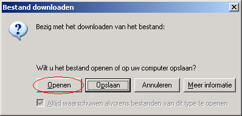Klikken op de knop "openen" om het installatieprogramma te starten vanaf de huidige locatie. Mogelijk krijgt u nog een extra dialoogvenster te zien, waarin om bevestiging wordt gevraagd. Klikt u dan op "Ja".
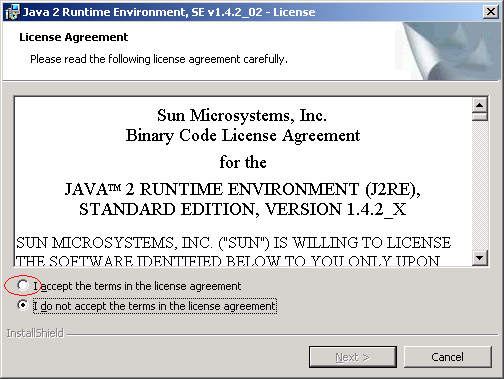
Hier krijgt u de licentievoorwaarden van de Java JRE te lezen. Door het vakje naast "I accept the terms in the license agreement" te selecteren, geeft u aan het met de voorwaarden eens te zijn. Daarna kunt u op de knop "Next >" klikken om door te gaan met de installatie.
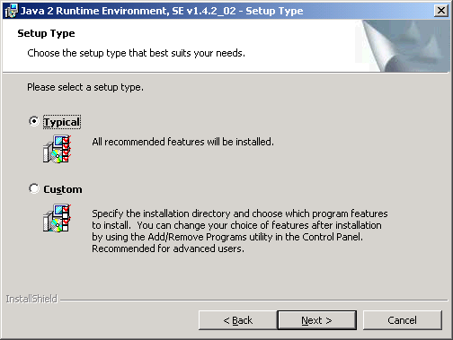
Hier kunt u eenvoudigweg op de knop "Next >" klikken. Hierna vindt de eigenlijke installatie plaats. Dit kan enkele minuten in beslag nemen.
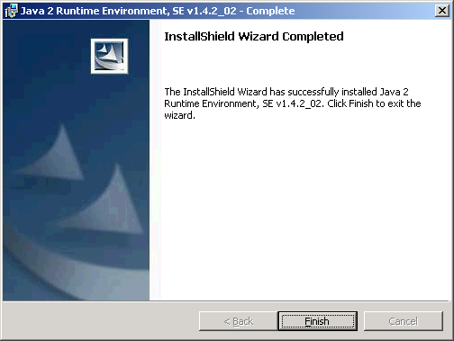
Wanneer de installatie klaar is, krijgt u dit scherm te zien. Op de knop "Finish" klikken om de installatie van de Java JRE af te ronden. Afhankelijk van de versie van Windows op uw computer kunt u daarna een dialoogvenster te zien krijgen, met de vraag de computer te herstarten.
2. De OpenOffice.org software installeren
De schermen die bij het installeren van de OpenOffice.org software krijgt te zien, worden hieronder getoond. Opmerking: u kunt steeds via de taakbalk, of met de toetscombinatie ALT+TAB, heen en weer schakelen tussen het installatieprogramma en deze handleiding.
De installatie van OpenOffice.org kunt u starten door op onderstaande link te klikken.
OpenOffice.org NL voor Windows installerenKlikken op de knop "openen" om het installatieprogramma te starten vanaf de huidige locatie. Mogelijk krijgt u nog een extra dialoogvenster te zien, waarin om bevestiging wordt gevraagd. Klikt u dan op "Ja".
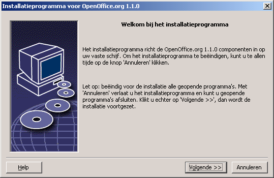
Klikken op "Volgende >>".
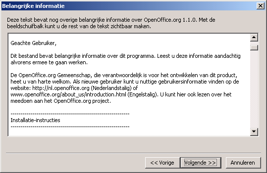
In dit scherm wordt informatie getoond die nuttig kan zijn bij het installeren of het gebruik van OpenOffice.org. Klikken op "Volgende >>".
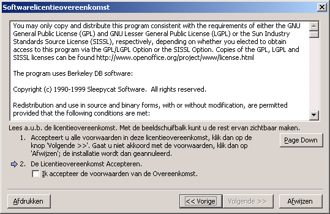
U krijgt de licentievoorwaarden van OpenOffice.org te zien. Met de beeldschuifbalk kunt u tot het eind van de tekst scrollen. Daarna kunt u een vinkje zetten in het vakje, waarmee u aangeeft de licentieovereenkomst te accepteren. Daarna op de knop "Volgende >>" klikken.
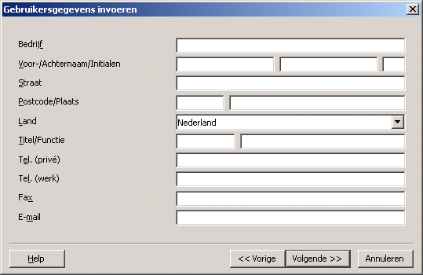
In dit scherm kunt u uw persoonlijke gegevens invullen. OpenOffice.org kan dit gebruiken om bijvoorbeeld bij het schrijven van een brief automatisch uw adres in te voegen.
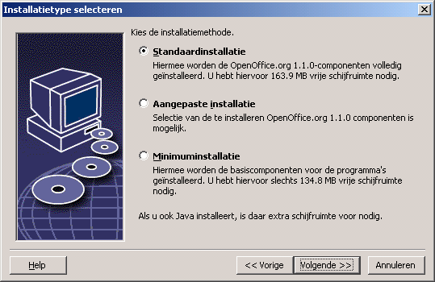
Klikken op "Volgende >>".
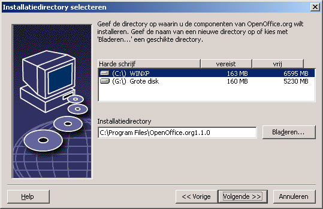
U kunt hier desgewenst een andere installatiedirectory kiezen. Klikken op "Volgende >>".
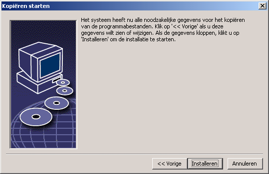
Klikken op "Installeren" om door te gaan met de installatie.
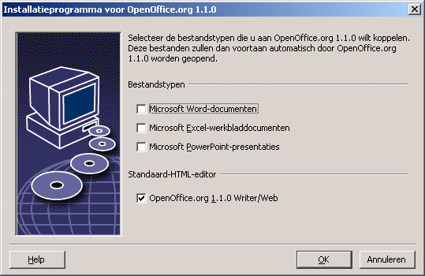
Als u de aangegeven bestandstypen standaard met OpenOffice.org wilt gaan openen, zorgt u dan dat de overeenkomstige vakjes aangevinkt zijn. Als u de bestandstypen standaard met een ander programma (zoals Microsoft Office) wilt blijven openen, moeten de vakjes niet aangevinkt zijn. Klikken op "OK" om door te gaan.
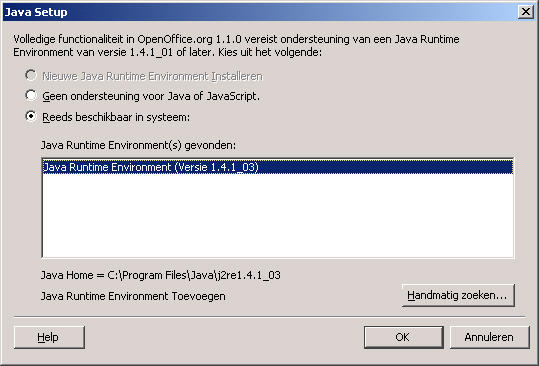
In dit scherm kunt u de Java-installatie op uw systeem selecteren.
Klikken op "OK".
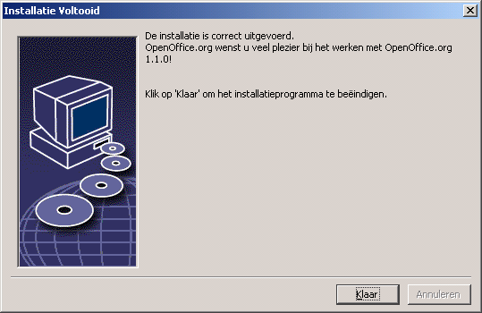
Klikken op "OK" om de installatie af te sluiten.
3. Registratie
De eerste keer dat u OpenOffice.org opstart, krijgt u een dialoogvenster te zien dat u uitnodigt om OpenOffice.org te registreren. De registratie is niet verplicht, maar door deel te nemen aan de enquête kunt u het OpenOffice.org project inzicht geven over de gebruikers van het pakket.
4. Woordenlijsten installeren
De Nederlandstalige spellingcontrole moet nog apart worden geïnstalleerd. Dit gaat als volgt. Het bestand woordenlijsten.sxw in de map "Windows" op de CD-ROM openen door erop te dubbelklikken. OpenOffice.org wordt opgestart, en u krijgt het onderstaande dialoogvenster te zien:
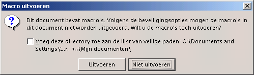Voor de installatie van de woordenlijsten moet OpenOffice.org de macro's in het document uitvoeren. Klikt u daarom op "Uitvoeren". U kunt hierna de aanwijzingen in het document volgen om de gewenste woordenlijsten te installeren.
5. Nederlandstalige helpbestanden installeren
De Helpfunctie van de Nederlandstalige OpenOffice.org 1.1.0 is nog in het Engels. De reden daarvan is dat op het moment van vervaardigen ervan, de vertaling van de Helpfunctie in het Nederlands nog niet helemaal klaar was. Om de Nederlandstalige helpbestanden te installeren, volgt u de aanwijzingen in het tekstbestand Nederlandstalige helpbestanden installeren
De installatie van OpenOffice.org is hiermee afgerond. Wij wensen u veel plezier met het pakket! Informatie over het gebruik van OpenOffice.org vindt u op de webpagina's van het Nederlandstalige deelproject nl.openoffice.org.
6 november 2003
Simon Brouwer